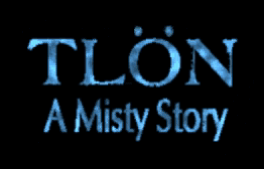
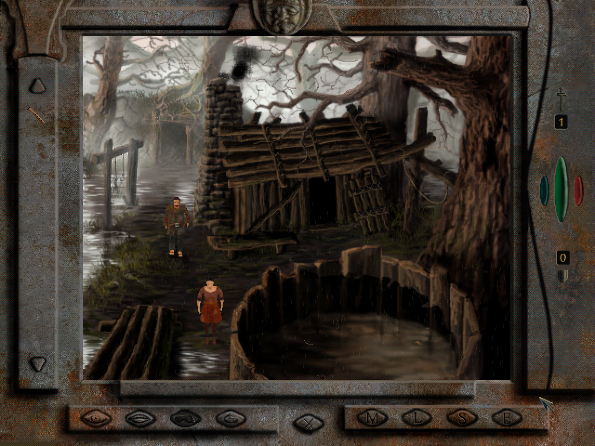
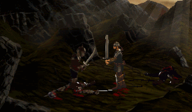

What's Tlön: A Misty Story?
Tlön: A Misty Story is a point and click adventure game from 1999 by Slovakian developers Reality. You play a villager who stumbles upon some adventure while crawling through a swamp.
You can read more about the game through MobyGames, The Obscuritory and Abandonware France among other sites.

What's the Problem?
The problem is that there is a well known game breaking bug. Once you reach a certain point you are supposed to be ambushed by Goblins but the exit to the ambush room is never created.
Someone has painstakingly figured out save games that are past that section but there was no way to actually experience the ambush itself.
The Solution
Anyway, I fixed it. You can now play through the whole game without any save game shenanigans.
The fix includes:
- a no-cd patch from an earlier release.
- a new exit when you complete a certain task.
- a fix for a bug during the ambush that left you in an unbreakable animation loop.
- allows skipping the logo at the start with ESC.
- print patched version number during main menu.

I've tested it on Windows 10 with DxWnd running and within a Windows 98 VM. I'd be interested in hearing if you have success in other configurations too!
Downloads
Download:
- Tlön patch package 2026-09-13 (fixes NoCD)
Tlön patch package 2026-09-12 (first release)
The patch package includes:
- two patched versions of tlon.exe. One has a no-cd patch included for when you want to run entirely from your hard drive.
- patched videos that have been circulating. I'm not sure of the author.
- a registry file for initialising the configuration. It is very conservative with a lot of effects disabled.
- an empty save game directory (the game assumes the installer has created one)
- a DxWnd .dxw file for importing into DxWnd.
I don't think I have permission to distribute the original game but Visiongame.cz hosts it and seems official enough. The download is under "Ke stažení"
Running It
You can install with the original CD on a Windows 98 PC and use the patched executable but for most people, you will be running modern Windows. This will require a few extra steps to skip the install program (it sometimes doesn't work) and use DxWnd.
The basic steps are:

Troubleshooting
The game is extreme fragile around alt-tab. It'll work sometimes but you'll just as likely get it to freeze. sad face emoji.
If you start experiencing slowdowns, you probably can fix it by quitting and reentering the game.
Try disabling atmospheric effects and/or smoke in the settings. Make sure anti-aliasing is always disabled, since I find the game crashes a lot with that enabled.
Experiment with DxWnd settings documented in next section.
Tshoot.exe is a bundled utility that will let you change some settings outside of the game.
Try running on a virtual machine running Windows 98.
DxWnd and DirectDraw Wrappers
Look, I don't know much about these things but DirectDraw is deprecated and might not even be available on modern Windows. There are various tools that will wrap and replace these APIs. I had some success using DxWnd but you might want to explore other options.
When using DxWnd, you can import `Tlon.dxw` from the download package and import it.
For Windows 11 and newer, you might need to also install the DirectX End-User Runtimes (June 2010). I dunno, I'm still on Windows 10.
If you want to create a DxWnd profile from scratch, these settings are important:
Under "Video", the resolution must be 640x480:

Under "DirectX", you must turn off "Support offscreen 3D" (it broke alt-tab for me) and enable "Set texture pixel format" (it fixes the colours during video playback). You can force VSync if you want too.

Optional to try if still having trouble:
Under "GDI", you may want scaled GDI calls but it might only be for high-dpi systems.

If you have trouble with alt-tabbing in and out of game (as in, it freezes when you come back to it), try enabling Mouse Clipper and DirectInput hooking, setting the coop level.


Oh! And don't modify the DxWnd settings while the game is running! It seems to definitely crash it that way. (Or maybe it was just coincodence)
You may need to experiment though. I haven't found the perfect settings yet. Save often.
Reference: I got some of these from the DxWnd discussion forums for Tlön.
Contact Me!
Got any suggestions or thoughts? You can reach me on BlueSky and/or Mastodon.
Page History
2026-09-12 - Initial Release
2026-09-13 - Added new version of NoCD patch, and print patch version in main menu.